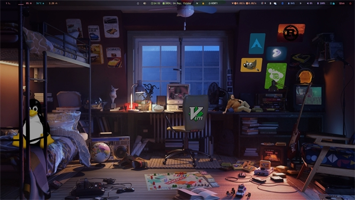
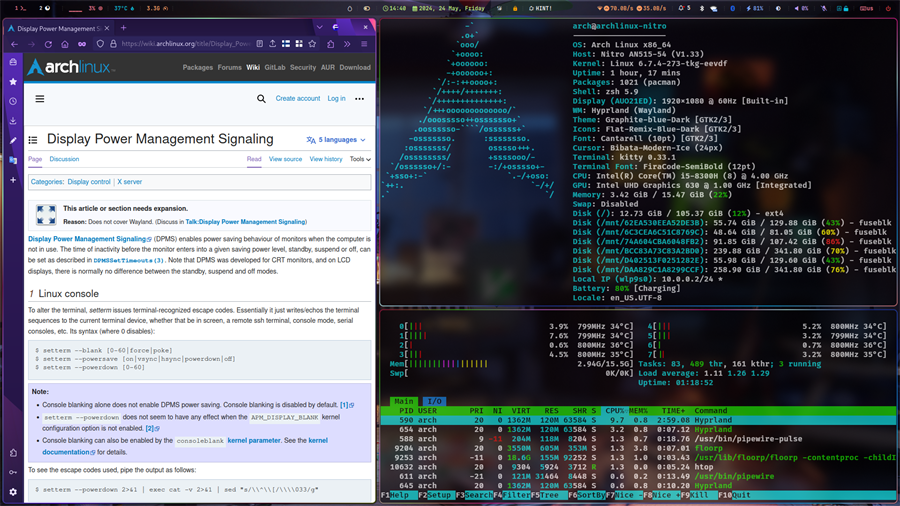

My configs and dotfiles
(For future reference)
“
My system, my rules.
- NVN
Current setup on laptop


Relevant XKCD (#1806)
MPV
# Specify high quality video rendering preset (for --vo=gpu only) # Can cause performance problems with some drivers and GPUs. profile=gpu-hq # Enable hardware decoding if available. Often, this does not work with all # video outputs, but should work well with default settings on most systems. # If performance or energy usage is an issue, forcing the vdpau or vaapi VOs # may or may not help. hwdec=auto
SwayWM Config (Minimal)
### Variables # # Logo key. Use Mod1 for Alt. set $mod Mod4 # Home row direction keys, like vim set $left h set $down j set $up k set $right l # Your preferred terminal emulator set $term foot # Your preferred application launcher # Note: pass the final command to swaymsg so that the resulting window can be opened # on the original workspace that the command was run on. set $menu "wofi --show drun" exec /usr/lib/polkit-gnome/polkit-gnome-authentication-agent-1 #exec nm-applet exec dunst #exec waybar exec dbus-update-activation-environment --systemd DISPLAY WAYLAND_DISPLAY SWAYSOCK XDG_CURRENT_DESKTOP exec gammastep -O 4000 ### Output configuration #output * bg /usr/share/backgrounds/sway/Sway_Wallpaper_Blue_1920x1080.png fill output * bg /home/flex/sway.webp fill # # Example configuration: # # output HDMI-A-1 resolution 1920x1080 position 1920,0 # # You can get the names of your outputs by running: swaymsg -t get_outputs #input "1267:587:ELAN_Touchscreen" map_to_output eDP-1 ### Idle configuration # # Example configuration: # # exec swayidle -w \ # timeout 300 'swaylock -f -c 000000' \ # timeout 600 'swaymsg "output * power off"' resume 'swaymsg "output * power on"' \ # before-sleep 'swaylock -f -c 000000' # # This will lock your screen after 300 seconds of inactivity, then turn off # your displays after another 300 seconds, and turn your screens back on when # resumed. It will also lock your screen before your computer goes to sleep. ### Input configuration # # Example configuration: # input "2:7:SynPS/2_Synaptics_TouchPad" { dwt enabled tap enabled natural_scroll disabled middle_emulation enabled } # # You can get the names of your inputs by running: swaymsg -t get_inputs # Read `man 5 sway-input` for more information about this section. ### Key bindings # # Basics: # # Start a terminal bindsym $mod+Return exec $term # Kill focused window bindsym $mod+C kill # Start your launcher #exec_always nwg-drawer -r #bindsym $mod+Q exec nwg-drawer bindsym $mod+Q exec $menu bindsym $mod+F exec librewolf bindsym $mod+E exec thunar # Drag floating windows by holding down $mod and left mouse button. # Resize them with right mouse button + $mod. # Despite the name, also works for non-floating windows. # Change normal to inverse to use left mouse button for resizing and right # mouse button for dragging. floating_modifier $mod normal # Reload the configuration file bindsym $mod+Shift+c reload bindsym $mod+Shift+r exec "killall -SIGUSR2 waybar" # Exit sway (logs you out of your Wayland session) bindsym $mod+Shift+e exec swaynag -t warning -m 'You pressed the exit shortcut. Do you really want to exit sway? This will end your Wayland session.' -B 'Yes, exit sway' 'swaymsg exit' # # Moving around: # # Move your focus around bindsym $mod+$left focus left bindsym $mod+$down focus down bindsym $mod+$up focus up bindsym $mod+$right focus right # Or use $mod+[up|down|left|right] bindsym $mod+Left focus left bindsym $mod+Down focus down bindsym $mod+Up focus up bindsym $mod+Right focus right # Move the focused window with the same, but add Shift bindsym $mod+Shift+$left move left bindsym $mod+Shift+$down move down bindsym $mod+Shift+$up move up bindsym $mod+Shift+$right move right # Ditto, with arrow keys bindsym $mod+Shift+Left move left bindsym $mod+Shift+Down move down bindsym $mod+Shift+Up move up bindsym $mod+Shift+Right move right # # Workspaces: # # Switch to workspace bindsym $mod+1 workspace number 1 bindsym $mod+2 workspace number 2 bindsym $mod+3 workspace number 3 bindsym $mod+4 workspace number 4 bindsym $mod+5 workspace number 5 bindsym $mod+6 workspace number 6 bindsym $mod+7 workspace number 7 bindsym $mod+8 workspace number 8 bindsym $mod+9 workspace number 9 bindsym $mod+0 workspace number 10 # Move focused container to workspace bindsym $mod+Shift+1 move container to workspace number 1 bindsym $mod+Shift+2 move container to workspace number 2 bindsym $mod+Shift+3 move container to workspace number 3 bindsym $mod+Shift+4 move container to workspace number 4 bindsym $mod+Shift+5 move container to workspace number 5 bindsym $mod+Shift+6 move container to workspace number 6 bindsym $mod+Shift+7 move container to workspace number 7 bindsym $mod+Shift+8 move container to workspace number 8 bindsym $mod+Shift+9 move container to workspace number 9 bindsym $mod+Shift+0 move container to workspace number 10 # Note: workspaces can have any name you want, not just numbers. # We just use 1-10 as the default. # # Layout stuff: # # You can "split" the current object of your focus with # $mod+b or $mod+v, for horizontal and vertical splits # respectively. bindsym $mod+b splith bindsym $mod+v splitv # Switch the current container between different layout styles #bindsym $mod+s layout stacking #bindsym $mod+w layout tabbed #bindsym $mod+e layout toggle split # Make the current focus fullscreen # bindsym $mod+f fullscreen # Toggle the current focus between tiling and floating mode bindsym $mod+Shift+F floating toggle # Swap focus between the tiling area and the floating area bindsym $mod+space focus mode_toggle # Move focus to the parent container bindsym $mod+a focus parent # # Scratchpad: # # Sway has a "scratchpad", which is a bag of holding for windows. # You can send windows there and get them back later. # Move the currently focused window to the scratchpad bindsym $mod+Shift+minus move scratchpad # Show the next scratchpad window or hide the focused scratchpad window. # If there are multiple scratchpad windows, this command cycles through them. bindsym $mod+minus scratchpad show # # Resizing containers: # mode "resize" { # left will shrink the containers width # right will grow the containers width # up will shrink the containers height # down will grow the containers height bindsym $left resize shrink width 10px bindsym $down resize grow height 10px bindsym $up resize shrink height 10px bindsym $right resize grow width 10px # Ditto, with arrow keys bindsym Left resize shrink width 10px bindsym Down resize grow height 10px bindsym Up resize shrink height 10px bindsym Right resize grow width 10px # Return to default mode bindsym Return mode "default" bindsym Escape mode "default" } bindsym $mod+d mode "resize" set $refresh_i3status killall -SIGUSR1 i3status bindsym XF86AudioRaiseVolume exec --no-startup-id pactl set-sink-volume @DEFAULT_SINK@ +1% && $refresh_i3status bindsym XF86AudioLowerVolume exec --no-startup-id pactl set-sink-volume @DEFAULT_SINK@ -1% && $refresh_i3status bindsym XF86AudioMute exec --no-startup-id pactl set-sink-mute @DEFAULT_SINK@ toggle && $refresh_i3status bindsym XF86AudioMicMute exec --no-startup-id pactl set-source-mute @DEFAULT_SOURCE@ toggle && $refresh_i3status bindsym XF86MonBrightnessUp exec --no-startup-id brightnessctl set +2% bindsym XF86MonBrightnessDown exec --no-startup-id brightnessctl set 2%- bindsym $mod+bracketleft exec playerctl previous bindsym $mod+bracketright exec playerctl next bindsym $mod+shift+bracketleft exec playerctl position 10- bindsym $mod+shift+bracketright exec playerctl position 10+ mode passthrough { bindsym $mod+P mode default } bindsym $mod+P mode passthrough bar { status_command i3status position top }
linux-TKG config
# linux-TkG config file # Linux distribution you are using, options are "Arch", "Ubuntu", "Debian", "Fedora", "Suse", "Gentoo", "Generic". # It is automatically set to "Arch" when using PKGBUILD. # If left empty, the script will prompt _distro="" # Kernel Version - x.x format without the subversion (will always grab latest available subversion) is recommended # you can also set a specific kernel version, e.g. "6.0-rc4" or "5.10.51", # -> note however that a "z" too small on a "x.y.z" version may make patches fail # as they got adapted for newer "z" values. _version="" #### MISC OPTIONS #### # External config file to use - If the given file exists in path, it will override default config (customization.cfg) - Default is ~/.config/frogminer/linux-tkg.cfg _EXT_CONFIG_PATH=~/.config/frogminer/linux-tkg.cfg # [Arch specific] Set to anything else than "true" to limit cleanup operations and keep source and files generated during compilation. # Default is "true". _NUKR="false" # Git mirror to use to get the kernel sources, possible values are "kernel.org", "googlesource.com", "github.com" and "torvalds" _git_mirror="" # Root folder where to checkout the kernel sources (linux-src-git subdir) and build # Note: - Leave empty to use PKGBUILD's dir # - Start with a '/' for an absolute path in which `linux-tkg/linux-src-git/` will be created # - This setting can be used to set the work/build folder to a tmpfs folder # - Requires >= 32GB ram when building a full kernel, should work with less ram with modprobed-db _kernel_work_folder="/mnt/RAM" # Permanent root folder where to keep the git clone (linux-kernel.git subdir) and fetch new blobs # Note: - Leave empty to use PKGBUILD's dir # - Start with a '/' for an absolute path in which `linux-tkg/linux-kernel.git/` will be created # - If your internet is faster than your storage, it may be wise to put this folder # in a tmpfs location (although it will reclone after each restart / tmpfs folder cleanup) _kernel_source_folder="/mnt/RAM" # Custom compiler root dirs - Leave empty to use system compilers # Example: CUSTOM_GCC_PATH="/home/frog/PKGBUILDS/mostlyportable-gcc/gcc-mostlyportable-9.2.0" CUSTOM_GCC_PATH="" # Custom LLVM compiler root dirs - Leave empty to use system llvm compiler # Example: CUSTOM_LLVM_PATH="/home/frog/PKGBUILDS/mostlyportable-llvm/llvm-mostlyportable-11.0.0" CUSTOM_LLVM_PATH="" # Set to true to bypass makepkg.conf and use all available threads for compilation. False will respect your makepkg.conf options. _force_all_threads="true" # Set to true to prevent ccache from being used and set CONFIG_GCC_PLUGINS=y (which needs to be disabled for ccache to work properly) _noccache="false" # [Experimental] Build only a subset of the default kernel modules list to speedup compile time and lower needed space to build kernel # Notes: # - If the kernel fails to boot with this option active, disable it and rebuild # - This option cannot be used with _modprobeddb="true" _kernel_on_diet="false" # Set to true to use modprobed db to clean config from unneeded modules. Speeds up compilation considerably. Requires root - https://wiki.archlinux.org/index.php/Modprobed-db # Using this option can trigger user prompts if the config doesn't go smoothly. # !!!! Make sure to have a well populated db !!!! _modprobeddb="false" # modprobed-db database file location _modprobeddb_db_path=~/.config/modprobed.db # Set to "1" to call make menuconfig, "2" to call make nconfig, "3" to call make xconfig, before building the kernel. Set to false to disable and skip the prompt. _menunconfig="" # Set to true to generate a kernel config fragment from your changes in menuconfig/nconfig. Set to false to disable and skip the prompt. _diffconfig="" # Set to the file name where the generated config fragment should be written to. Only used if _diffconfig is active. _diffconfig_name="" # [Generic and Gentoo specific] Dracut options when generating initramfs _dracut_options="--lz4" #### KERNEL OPTIONS #### # Name of the default config file to use for the kernel # Default (empty) : "config.x86_64" from the linux-tkg-config/5.y folder. # "running-kernel" : Picks the .config file from the currently running kernel. # It is recommended to be running an official kernel before running this script, to pick off a correct .config file # "config_hardened.x86_64" : config file for a hardened kernel, available for kernel version "5.15", "5.13", "5.11", "5.10", "5.7", "5.4". # To get a complete hardened setup, you have to use "cfs" as _cpusched. # User provided value : custom user provided file, the given path should be relative to the PKGBUILD file. This enables for example to use a user stripped down .config file. # If the .config file isn't up to date with the chosen kernel version, any extra CONFIG_XXXX is set to its default value. # Note: the script copies the resulting .config file as "kernelconfig.new" next to the PKGBUILD as a convenience for an eventual re-use. It gets overwritten at each run. # One can use "kernelconfig.new" here to always use the latest edited .config file. modprobed-db needs to be used only once for its changes to be picked up. _configfile="" # Determine whether to call "olddefconfig" (default) or "oldconfig" for manual config updating interaction. _config_updating="olddefconfig" # Disable some non-module debugging - See PKGBUILD for the list _debugdisable="true" # Strip the vmlinux file after build is done. Set to anything other than "true" if you require debug headers. Default is "true" _STRIP="true" # LEAVE AN EMPTY VALUE TO BE PROMPTED ABOUT FOLLOWING OPTIONS AT BUILD TIME # CPU scheduler - Options are "pds", "bmq", "cacule", "tt", "bore", "bore-eevdf", "echo", "cfs" (linux 6.5-) or "eevdf" (kernel's default, 6.6+) # "upds" (TkG's Undead PDS) and "muqss" are also available on legacy kernel revisions _cpusched="" # Compiler to use - Options are "gcc" or "llvm". # For advanced users. _compiler="" # [Generic and Gentoo specific] Replace `libunwind` with `llvm-libunwind`. # ! This is currently experimental. # ! It can only work with the `llvm-libunwind` `USE` flag in `sys-devel/clang-common` for Gentoo. # Set to "true" to enable. _libunwind_replace="" # Use the LLVM Integrated Assembler for a complete LLVM toolchain built kernel. Default is "1" when using LLVM. # Set to "0" to disable if desired, otherwise stick to the default behavior. _llvm_ias="1" # Clang LTO mode, only available with the "llvm" compiler - options are "no", "full" or "thin". # ! This is currently experimental and might result in an unbootable kernel - Not recommended ! # "no: do not enable LTO" # "full: uses 1 thread for Linking, slow and uses more memory, theoretically with the highest performance gains." # "thin: uses multiple threads, faster and uses less memory, may have a lower runtime performance than Full." _lto_mode="" # Apply PREEMPT_RT patchset to the kernel. # ! Only CFS CPU scheduler is compatible with this patchset ! # Set to "1" to enable. _preempt_rt="" # Forcibly apply the PREEMPT_RT patchset to the kernel, even when upstream does not officially support the kernel subversion. # ! This will still not apply when the patch itself or linux-tkg (see _version) do not support the kernel major version - Not recommended ! # Set to "1" to enable. _preempt_rt_force="" # CPU sched_yield_type - Choose what sort of yield sched_yield will perform # For PDS and MuQSS: 0: No yield. (Recommended option for gaming on PDS and MuQSS) # 1: Yield only to better priority/deadline tasks. (Default - can be unstable with PDS on some platforms) # 2: Expire timeslice and recalculate deadline. (Usually the slowest option for PDS and MuQSS, not recommended) # For BMQ: 0: No yield. # 1: Deboost and requeue task. (Default) # 2: Set rq skip task. _sched_yield_type="" # Round Robin interval is the longest duration two tasks with the same nice level will be delayed for. When CPU time is requested by a task, it receives a time slice equal # to the rr_interval in addition to a virtual deadline. When using yield_type 2, a low value can help offset the disadvantages of rescheduling a process that has yielded. # MuQSS default: 6ms" # PDS default: 4ms" # BMQ default: 2ms" # Set to "1" for 2ms, "2" for 4ms, "3" for 6ms, "4" for 8ms, or "default" to keep the chosen scheduler defaults. _rr_interval="" # Set to "true" to disable FUNCTION_TRACER/GRAPH_TRACER, lowering overhead but limiting debugging and analyzing of kernel functions - Kernel default is "false" _ftracedisable="true" # Set to "true" to disable NUMA, lowering overhead, but breaking CUDA/NvEnc on Nvidia equipped systems - Kernel default is "false" _numadisable="true" # Set to "true" to enable misc additions - May contain temporary fixes pending upstream or changes that can break on non-Arch - Kernel default is "true" _misc_adds="true" # Set to "0" for periodic ticks, "1" to use CattaRappa mode (enabling full tickless) and "2" for tickless idle only. # Full tickless can give higher performances in case you use isolation of CPUs for tasks # and it works only when using the nohz_full kernel parameter, otherwise behaves like idle. # Just tickless idle perform better for most platforms. _tickless="0" # Set to "true" to use ACS override patch - https://wiki.archlinux.org/index.php/PCI_passthrough_via_OVMF#Bypassing_the_IOMMU_groups_.28ACS_override_patch.29 - Kernel default is "false" _acs_override="" # Set to "true" to add Bcache filesystem support. You'll have to install bcachefs-tools-git from AUR for utilities - https://bcachefs.org/ # If in doubt, leave it to "false" # Note: # - only for linux <= 6.6, upstreamed (aka included) in linux >= 6.7 # - this fs can be buggy and isn't recommended on production machines # - linux <= 6.0 : this option conflicts with MGLRU _bcachefs="false" # Set to "true" to enable builtin support for ntsync, an experimental replacement for esync - requires patched wine - https://repo.or.cz/linux/zf.git/shortlog/refs/heads/ntsync5 # ! Can't be used on multiple kernels installed side-by-side, which will require https://aur.archlinux.org/packages/ntsync-dkms instead of this option ! _ntsync="false" # Set to "true" to enable Binder modules to use Waydroid Android containers _waydroid="" # Various patches and tweaks from Zen/Liquorix, Xanmod and the community - Default is "true" _glitched_base="true" # A selection of patches from Zen/Liquorix kernel and additional tweaks for a better gaming experience (ZENIFY) - Default is "true" # ! depends on _glitched_base="true" ! _zenify="true" # compiler optimization level - 1. Optimize for performance (-O2); 2. Optimize harder (-O3); 3. Optimize for size (-Os) - Kernel default is "1" _compileroptlevel="3" # CPU compiler optimizations - Defaults to prompt at kernel config if left empty # AMD CPUs : "k8" "k8sse3" "k10" "barcelona" "bobcat" "jaguar" "bulldozer" "piledriver" "steamroller" "excavator" "zen" "zen2" "zen3" "zen4" (zen3 opt support depends on GCC11) (zen4 opt support depends on GCC13) # Intel CPUs : "mpsc"(P4 & older Netburst based Xeon) "atom" "core2" "nehalem" "westmere" "silvermont" "sandybridge" "ivybridge" "haswell" "broadwell" "skylake" "skylakex" "cannonlake" "icelake" "goldmont" "goldmontplus" "cascadelake" "cooperlake" "tigerlake" "sapphirerapids" "rocketlake" "alderlake" "raptorlake" "meteorlake" (raptorlake and meteorlake opt support require GCC13) # Other options : # - "native_amd" (use compiler autodetection - Selecting your arch manually in the list above is recommended instead of this option) # - "native_intel" (use compiler autodetection - Selecting your arch manually in the list above is recommended instead of this option) # - "generic" (kernel's default - to share the package between machines with different CPU µarch as long as they are x86-64) # # https://en.wikipedia.org/wiki/X86-64#Microarchitecture_Levels) # - "generic_v2" (depends on GCC11 - to share the package between machines with different CPU µarch supporting at least x86-64-v2 # - "generic_v3" (depends on GCC11 - to share the package between machines with different CPU µarch supporting at least x86-64-v3 # - "generic_v4" (depends on GCC11 - to share the package between machines with different CPU µarch supporting at least x86-64-v4 _processor_opt="" # CacULE only - Enable Response Driven Balancer, an experimental load balancer for CacULE _cacule_rdb="false" # CacULE only - Load balance time period - Default is 19 # https://github.com/hamadmarri/cacule-cpu-scheduler/blob/master/patches/CacULE/RDB/rdb.patch#L56 _cacule_rdb_interval="19" # TT only - Enable High HZ patch (available for 5.15 only) - Default is "false" _tt_high_hz="false" # MuQSS and PDS only - SMT (Hyperthreading) aware nice priority and policy support (SMT_NICE) - Kernel default is "true" - You can disable this on non-SMT/HT CPUs for lower overhead _smt_nice="false" # EEVDF only (6.8+) - Add support for Sched-ext https://github.com/sched-ext/scx # Arch users can find scx schedulers on the AUR (https://aur.archlinux.org/packages/scx-scheds & https://aur.archlinux.org/packages/scx-scheds-git. For -git scx schedulers the latest rc kernel is reccomended) thanks to @sirlucjan (for persistence, set scheduler in "/etc/default/scx" and enable the `scx` service). _eevdf_sched_ext_support="true" # Trust the CPU manufacturer to initialize Linux's CRNG (RANDOM_TRUST_CPU) - Kernel default is "false" _random_trust_cpu="true" # Timer frequency - "100" "250" "300" "500" "750" "1000" ("2000" is available for cacule cpusched only, "625" is available for echo cpusched only) - More options available in kernel config prompt when left empty depending on selected cpusched with the default option pointed with a ">" (2000 for cacule, 100 for muqss, 625 for echo and 1000 for other cpu schedulers) _timer_freq="" # Default CPU governor - "performance", "ondemand", "schedutil" or leave empty for default (schedutil) _default_cpu_gov="schedutil" # Use an aggressive ondemand governor instead of default ondemand to improve performance on low loads/high core count CPUs while keeping some power efficiency from frequency scaling. # It still requires you to either set ondemand as default governor or to select it in some way at runtime. _aggressive_ondemand="true" # [Advanced] Default TCP IPv4 algorithm to use. Options are: "yeah", "bbr", "cubic", "reno", "vegas" and "westwood". Leave empty if unsure. # This config option will not be prompted # Can be changed at runtime with the command line `# echo "$name" > /proc/sys/net/ipv4/tcp_congestion_control` where $name is one of the options above. # Default (empty) and fallback : cubic _tcp_cong_alg="" # You can pass a default set of kernel command line options here - example: "intel_pstate=passive nowatchdog amdgpu.ppfeaturemask=0xfffd7fff mitigations=off" _custom_commandline="intel_pstate=passive kernel.split_lock_mitigate=0 mitigations=off nowatchdog sysctl.vm.swappiness=7" # Selection of Clearlinux patches _clear_patches="true" # Add OpenRGB compatibility for certain i2c controllers - https://gitlab.com/CalcProgrammer1/OpenRGB/-/blob/master/OpenRGB.patch _openrgb="true" #### SPESHUL OPTION #### # [Arch only] If you want to bypass the stock naming scheme and enforce something else (example : "linux") - Useful for some bootloaders requiring manual entry editing on each release. # !!! It will also change pkgname - If you don't explicitely need this, don't use it !!! # Use _kernel_localversion instead on non-Arch based distros _custom_pkgbase="linux-nvn-silvermont" # [non-Arch only] Kernel localversion. Putting it to "Mario" will make for example the kernel version be 5.7.0-tkg-Mario (given by uname -r) # If left empty, it will use "-tkg-${_cpusched}${_compiler}" where "${_cpusched}" will be replaced by the user chosen scheduler, ${_compiler} will be replaced by "-llvm" if clang is used (nothing for GCC). # Use _custom_pkgbase instead on Arch based distros _kernel_localversion="" # Set to your maximum number of CPUs (physical + logical cores) - Lower means less overhead - You can set it to "$(nproc)" to use the current host's CPU(s) core count, or leave empty to use default # If you set this to a lower value than you have cores, some cores will be disabled # Default Arch kernel value is 320 _NR_CPUS_value="16" # [non-Arch only] Install kernel after the building is done ? # Options are: "yes", "no", "prompt" _install_after_building="prompt" # [non-Arch only] Use 'script' command for logging _logging_use_script="yes" #### LEGACY OPTIONS #### # Upstreamed version of Fsync from Linux 5.16 for previous kernel versions - https://github.com/andrealmeid/futex_waitv_patches # ! Only affect 5.13, 5.14 and 5.15 kernel branches. Safely ignored for 5.16 or newer ! _fsync_backport="true" # Fsync legacy, known as FUTEX_WAIT_MULTIPLE (opcode 31) - previous version of fsync required for Valve Proton 4.11, 5.0 and 5.13 - https://steamcommunity.com/games/221410/announcements/detail/2957094910196249305 _fsync_legacy="true" # Set to "true" to enable support for futex2, a DEPRECATED interface that can be used by proton-tkg and proton 5.13 experimental through Fsync - Can be enabled alongside fsync legacy to use it as a fallback # https://gitlab.collabora.com/tonyk/linux/-/tree/futex2-dev # ! Only affect 5.10-5.14 kernel branches. Safely ignored for 5.15 or newer ! # ! required _fsync_backport="false" ! _fsync_futex2="false" # Set to "true" to add back missing symbol for AES-NI/AVX support on ZFS - This is a legacy option that can be ignored on 5.10+ kernels - https://github.com/NixOS/nixpkgs/blob/master/pkgs/os-specific/linux/kernel/export_kernel_fpu_functions.patch _zfsfix="true" # MuQSS only - CPU scheduler runqueue sharing - No sharing (RQ_NONE), SMT (hyperthread) siblings (RQ_SMT), Multicore siblings (RQ_MC), Symmetric Multi-Processing (RQ_SMP), NUMA (RQ_ALL) # Valid values are "none", "smt", "mc", "mc-llc"(for zen), "smp", "all" - Kernel default is "smt" _runqueue_sharing="" # MuQSS only - Make IRQ threading compulsory (FORCE_IRQ_THREADING) - Default is "false" _irq_threading="false" # Set to "true" to add multi-generational LRU framework support for improved memory pressure handling # Note: # - For kernel >= 5.18, Upstream for kernel >= 6.1 # - Conflicts with bcachefs for linux <= 6.0 # - More information https://lore.kernel.org/lkml/20220706220022.968789-1-yuzhao@google.com/ # - Older kernel versions might have a patch available in the community-patches repo _mglru="true" #### USER PATCHES #### # community patches - add patches (separated by a space) of your choice by name from the community-patches dir # example: _community_patches="clear_nack_in_tend_isr.myrevert ffb_regression_fix.mypatch 0008-drm-amd-powerplay-force-the-trim-of-the-mclk-dpm-levels-if-OD-is-enabled.mypatch" _community_patches="" # You can use your own patches by putting them in a subfolder called linux<VERSION><PATCHLEVEL>-tkg-userpatches (see README.md for more info) next to the PKGBUILD and giving them the .mypatch extension. # You can also revert patches by putting them in that same folder and giving them the .myrevert extension. # Also, userpatches variable below must be set to true for the above to work. _user_patches="true" # Apply all user patches without confirmation - !!! NOT RECOMMENDED !!! _user_patches_no_confirm="false" #### CONFIG FRAGMENTS #### # You can use your own kernel config fragments by putting them in the same folder as the PKGBUILD and giving them the .myfrag extension. # Also, the config fragments variable below must be set to true for the above to work. _config_fragments="true" # Apply all config fragments without confirmation - !!! NOT RECOMMENDED !!! _config_fragments_no_confirm="false"
Optimized makepkg.conf
#!/hint/bash # shellcheck disable=2034 # # /etc/makepkg.conf # ######################################################################### # SOURCE ACQUISITION ######################################################################### # #-- The download utilities that makepkg should use to acquire sources # Format: 'protocol::agent' DLAGENTS=('file::/usr/bin/curl -qgC - -o %o %u' 'ftp::/usr/bin/curl -qgfC - --ftp-pasv --retry 3 --retry-delay 3 -o %o %u' 'http::/usr/bin/curl -qgb "" -fLC - --retry 3 --retry-delay 3 -o %o %u' 'https::/usr/bin/curl -qgb "" -fLC - --retry 3 --retry-delay 3 -o %o %u' 'rsync::/usr/bin/rsync --no-motd -z %u %o' 'scp::/usr/bin/scp -C %u %o') # Other common tools: # /usr/bin/snarf # /usr/bin/lftpget -c # /usr/bin/wget #-- The package required by makepkg to download VCS sources # Format: 'protocol::package' VCSCLIENTS=('bzr::breezy' 'fossil::fossil' 'git::git' 'hg::mercurial' 'svn::subversion') ######################################################################### # ARCHITECTURE, COMPILE FLAGS ######################################################################### # CARCH="x86_64" CHOST="x86_64-pc-linux-gnu" #-- Compiler and Linker Flags #CPPFLAGS="" CFLAGS="-march=native -O2 -pipe -fno-plt -fexceptions \ -Wp,-D_FORTIFY_SOURCE=3 -Wformat -Werror=format-security \ -fstack-clash-protection -fcf-protection \ -fno-omit-frame-pointer -mno-omit-leaf-frame-pointer" CXXFLAGS="$CFLAGS -Wp,-D_GLIBCXX_ASSERTIONS" LDFLAGS="-Wl,-O1 -Wl,--sort-common -Wl,--as-needed -Wl,-z,relro -Wl,-z,now \ -Wl,-z,pack-relative-relocs -fuse-ld=mold" LTOFLAGS="-flto=auto" #RUSTFLAGS="-Cforce-frame-pointers=yes" #-- Make Flags: change this for DistCC/SMP systems #MAKEFLAGS="-j2" #-- Debugging flags DEBUG_CFLAGS="-g" DEBUG_CXXFLAGS="$DEBUG_CFLAGS" DEBUG_RUSTFLAGS="-C debuginfo=2" RUSTFLAGS="-C opt-level=2 -C target-cpu=native link-arg=-fuse-ld=mold" ######################################################################### # BUILD ENVIRONMENT ######################################################################### # # Makepkg defaults: BUILDENV=(!distcc !color !ccache check !sign) # A negated environment option will do the opposite of the comments below. # #-- distcc: Use the Distributed C/C++/ObjC compiler #-- color: Colorize output messages #-- ccache: Use ccache to cache compilation #-- check: Run the check() function if present in the PKGBUILD #-- sign: Generate PGP signature file # BUILDENV=(!distcc color ccache check !sign !debug !lto) # #-- If using DistCC, your MAKEFLAGS will also need modification. In addition, #-- specify a space-delimited list of hosts running in the DistCC cluster. #DISTCC_HOSTS="" # #-- Specify a directory for package building. #BUILDDIR=/tmp/makepkg ######################################################################### # GLOBAL PACKAGE OPTIONS # These are default values for the options=() settings ######################################################################### # # Makepkg defaults: OPTIONS=(!strip docs libtool staticlibs emptydirs !zipman !purge !debug !lto !autodeps) # A negated option will do the opposite of the comments below. # #-- strip: Strip symbols from binaries/libraries #-- docs: Save doc directories specified by DOC_DIRS #-- libtool: Leave libtool (.la) files in packages #-- staticlibs: Leave static library (.a) files in packages #-- emptydirs: Leave empty directories in packages #-- zipman: Compress manual (man and info) pages in MAN_DIRS with gzip #-- purge: Remove files specified by PURGE_TARGETS #-- debug: Add debugging flags as specified in DEBUG_* variables #-- lto: Add compile flags for building with link time optimization #-- autodeps: Automatically add depends/provides # OPTIONS=(strip docs !libtool !staticlibs emptydirs zipman purge debug lto) #-- File integrity checks to use. Valid: md5, sha1, sha224, sha256, sha384, sha512, b2 INTEGRITY_CHECK=(sha256) #-- Options to be used when stripping binaries. See `man strip' for details. STRIP_BINARIES="--strip-all" #-- Options to be used when stripping shared libraries. See `man strip' for details. STRIP_SHARED="--strip-unneeded" #-- Options to be used when stripping static libraries. See `man strip' for details. STRIP_STATIC="--strip-debug" #-- Manual (man and info) directories to compress (if zipman is specified) MAN_DIRS=({usr{,/local}{,/share},opt/*}/{man,info}) #-- Doc directories to remove (if !docs is specified) DOC_DIRS=(usr/{,local/}{,share/}{doc,gtk-doc} opt/*/{doc,gtk-doc}) #-- Files to be removed from all packages (if purge is specified) PURGE_TARGETS=(usr/{,share}/info/dir .packlist *.pod) #-- Directory to store source code in for debug packages DBGSRCDIR="/usr/src/debug" #-- Prefix and directories for library autodeps LIB_DIRS=('lib:usr/lib' 'lib32:usr/lib32') ######################################################################### # PACKAGE OUTPUT ######################################################################### # # Default: put built package and cached source in build directory # #-- Destination: specify a fixed directory where all packages will be placed #PKGDEST=/home/packages #-- Source cache: specify a fixed directory where source files will be cached #SRCDEST=/home/sources #-- Source packages: specify a fixed directory where all src packages will be placed #SRCPKGDEST=/home/srcpackages #-- Log files: specify a fixed directory where all log files will be placed #LOGDEST=/home/makepkglogs #-- Packager: name/email of the person or organization building packages #PACKAGER="John Doe <john@doe.com>" #-- Specify a key to use for package signing #GPGKEY="" ######################################################################### # COMPRESSION DEFAULTS ######################################################################### # COMPRESSGZ=(gzip -c -f -n) COMPRESSBZ2=(bzip2 -c -f) COMPRESSXZ=(xz -c -z -) COMPRESSZST=(zstd -c -T0 --ultra -20 -) COMPRESSLRZ=(lrzip -q) COMPRESSLZO=(lzop -q) COMPRESSZ=(compress -c -f) COMPRESSLZ4=(lz4 -q) COMPRESSLZ=(lzip -c -f) ######################################################################### # EXTENSION DEFAULTS ######################################################################### # PKGEXT='.pkg.tar.zst' SRCEXT='.src.tar.gz' ######################################################################### # OTHER ######################################################################### # #-- Command used to run pacman as root, instead of trying sudo and su #PACMAN_AUTH=() # vim: set ft=sh ts=2 sw=2 et: GITFLAGS="--filter=tree:0" OPTIONS=(!debug)
Waybar Minimal Config
Waybar Minimal Config
Waybar Minimal Config
// -*- mode: jsonc -*- { // "layer": "top", // Waybar at top layer // "position": "bottom", // Waybar position (top|bottom|left|right) // "height": 30, // Waybar height (to be removed for auto height) // "width": 1280, // Waybar width "spacing": 2, // Gaps between modules (4px) // Choose the order of the modules "modules-left": [ "sway/workspaces", "sway/mode", "sway/scratchpad" ], "modules-center": [ "sway/window" ], "modules-right": [ "mpd", "idle_inhibitor", "pulseaudio", "network", "cpu", "memory", "temperature", "backlight", "clock", "tray" ], // Modules configuration // "sway/workspaces": { // "disable-scroll": true, // "all-outputs": true, // "warp-on-scroll": false, // "format": "{name}: {icon}", // "format-icons": { // "1": "", // "2": "", // "3": "", // "4": "", // "5": "", // "urgent": "", // "focused": "", // "default": "" // } // }, "keyboard-state": { "numlock": true, "capslock": true, "format": "{name} {icon}", "format-icons": { "locked": "", "unlocked": "" } }, "sway/mode": { "format": "<span style=\"italic\">{}</span>" }, "sway/scratchpad": { "format": "{icon} {count}", "show-empty": false, "format-icons": ["", ""], "tooltip": true, "tooltip-format": "{app}: {title}" }, "mpd": { "format": "{stateIcon} {consumeIcon}{randomIcon}{repeatIcon}{singleIcon}{artist} - {album} - {title} ({elapsedTime:%M:%S}/{totalTime:%M:%S}) ⸨{songPosition}|{queueLength}⸩ {volume}% ", "format-disconnected": "Disconnected ", "format-stopped": "{consumeIcon}{randomIcon}{repeatIcon}{singleIcon}Stopped ", "unknown-tag": "N/A", "interval": 5, "consume-icons": { "on": " " }, "random-icons": { "off": "<span color=\"#f53c3c\"></span> ", "on": " " }, "repeat-icons": { "on": " " }, "single-icons": { "on": "1 " }, "state-icons": { "paused": "", "playing": "" }, "tooltip-format": "MPD (connected)", "tooltip-format-disconnected": "MPD (disconnected)" }, "idle_inhibitor": { "format": "{icon}", "format-icons": { "activated": "", "deactivated": "" } }, "tray": { // "icon-size": 21, "spacing": 10 }, "clock": { // "timezone": "America/New_York", "tooltip-format": "<big>{:%Y %B}</big>\n<tt><small>{calendar}</small></tt>", "format-alt": "{:%Y-%m-%d}" }, "cpu": { "format": "{usage}% ", "tooltip": false }, "memory": { "format": "{}% " }, "temperature": { // "thermal-zone": 2, "hwmon-path": "/sys/class/hwmon/hwmon1/temp2_input", "critical-threshold": 60, // "format-critical": "{temperatureC}°C {icon}", "format": "{temperatureC}°C {icon}", "format-icons": ["", "", ""] }, "backlight": { // "device": "acpi_video1", "format": "{percent}% {icon}", "format-icons": [""] }, "battery": { "states": { // "good": 95, "warning": 30, "critical": 15 }, "format": "{capacity}% {icon}", "format-full": "{capacity}% {icon}", "format-charging": "{capacity}% ", "format-plugged": "{capacity}% ", "format-alt": "{time} {icon}", // "format-good": "", // An empty format will hide the module // "format-full": "", "format-icons": ["", "", "", "", ""] }, "battery#bat2": { "bat": "BAT2" }, "power-profiles-daemon": { "format": "{icon}", "tooltip-format": "Power profile: {profile}\nDriver: {driver}", "tooltip": true, "format-icons": { "default": "", "performance": "", "balanced": "", "power-saver": "" } }, "network": { // "interface": "wlp2*", // (Optional) To force the use of this interface "format-wifi": "{essid} ({signalStrength}%) ", "format-ethernet": "{ipaddr}/{cidr} ", "tooltip-format": "{ifname} via {gwaddr} ", "format-linked": "{ifname} (No IP) ", "format-disconnected": "Disconnected ⚠", "format-alt": "{ifname}: {ipaddr}/{cidr}" }, "pulseaudio": { // "scroll-step": 1, // %, can be a float "format": "{volume}% {icon} {format_source}", "format-bluetooth": "{volume}% {icon} {format_source}", "format-bluetooth-muted": " {icon} {format_source}", "format-muted": " {format_source}", "format-source": "{volume}% ", "format-source-muted": "", "format-icons": { "headphone": "", "hands-free": "", "headset": "", "phone": "", "portable": "", "car": "", "default": ["", "", ""] }, "on-click": "pavucontrol" }, "custom/media": { "format": "{icon} {}", "return-type": "json", "max-length": 40, "format-icons": { "spotify": "", "default": "🎜" }, "escape": true, "exec": "$HOME/.config/waybar/mediaplayer.py 2> /dev/null" // Script in resources folder // "exec": "$HOME/.config/waybar/mediaplayer.py --player spotify 2> /dev/null" // Filter player based on name } }
NBFC Linux: AN515-54 config (Limited)
NBFC Linux: AN515-54 config (Limited)
NBFC Linux: AN515-54 config (Limited)
{ "LegacyTemperatureThresholdsBehaviour": true, "NotebookModel": "Acer Nitro AN515-54 Non Peaking", "Author": "Chandradeep Dey (modified by nvn)", "EcPollInterval": 3200, "ReadWriteWords": true, "CriticalTemperature": 91, "FanConfigurations": [ { "ReadRegister": 19, "WriteRegister": 55, "MinSpeedValue": 0, "MaxSpeedValue": 100, "IndependentReadMinMaxValues": true, "MinSpeedValueRead": 0, "MaxSpeedValueRead": 6122, "ResetRequired": true, "FanSpeedResetValue": 50, "FanDisplayName": "CPU fan", "TemperatureThresholds": [ { "UpThreshold": 45, "DownThreshold": 43, "FanSpeed": 0.0 }, { "UpThreshold": 55, "DownThreshold": 44, "FanSpeed": 39.0 }, { "UpThreshold": 60, "DownThreshold": 50, "FanSpeed": 50.0 }, { "UpThreshold": 65, "DownThreshold": 56, "FanSpeed": 57.0 }, { "UpThreshold": 73, "DownThreshold": 63, "FanSpeed": 65.0 }, { "UpThreshold": 78, "DownThreshold": 72, "FanSpeed": 75.0 }, { "UpThreshold": 81, "DownThreshold": 77, "FanSpeed": 82.0 } { "UpThreshold": 85, "DownThreshold": 80, "FanSpeed": 90.0 } ], "FanSpeedPercentageOverrides": [] }, { "ReadRegister": 21, "WriteRegister": 58, "MinSpeedValue": 0, "MaxSpeedValue": 100, "IndependentReadMinMaxValues": true, "MinSpeedValueRead": 0, "MaxSpeedValueRead": 6122, "ResetRequired": true, "FanSpeedResetValue": 50, "FanDisplayName": "GPU fan", "TemperatureThresholds": [ { "UpThreshold": 45, "DownThreshold": 43, "FanSpeed": 0.0 }, { "UpThreshold": 55, "DownThreshold": 44, "FanSpeed": 30.0 }, { "UpThreshold": 60, "DownThreshold": 50, "FanSpeed": 45.0 }, { "UpThreshold": 68, "DownThreshold": 56, "FanSpeed": 50.0 }, { "UpThreshold": 74, "DownThreshold": 67, "FanSpeed": 65.0 }, { "UpThreshold": 79, "DownThreshold": 73, "FanSpeed": 85.0 }, { "UpThreshold": 86, "DownThreshold": 78, "FanSpeed": 94.0 } ], "FanSpeedPercentageOverrides": [] } ], "RegisterWriteConfigurations": [ { "WriteMode": "Set", "WriteOccasion": "OnInitialization", "Register": 34, "Value": 12, "ResetRequired": true, "ResetValue": 4, "ResetWriteMode": "Set", "Description": "CPU fan manual mode" }, { "WriteMode": "Set", "WriteOccasion": "OnInitialization", "Register": 33, "Value": 48, "ResetRequired": true, "ResetValue": 16, "ResetWriteMode": "Set", "Description": "GPU fan manual mode" }, { "WriteMode": "Set", "WriteOccasion": "OnInitialization", "Register": 16, "Value": 0, "ResetRequired": true, "ResetValue": 1, "ResetWriteMode": "Set", "Description": "CoolBoost off" } ] }

{kind=link}
{kind=link}